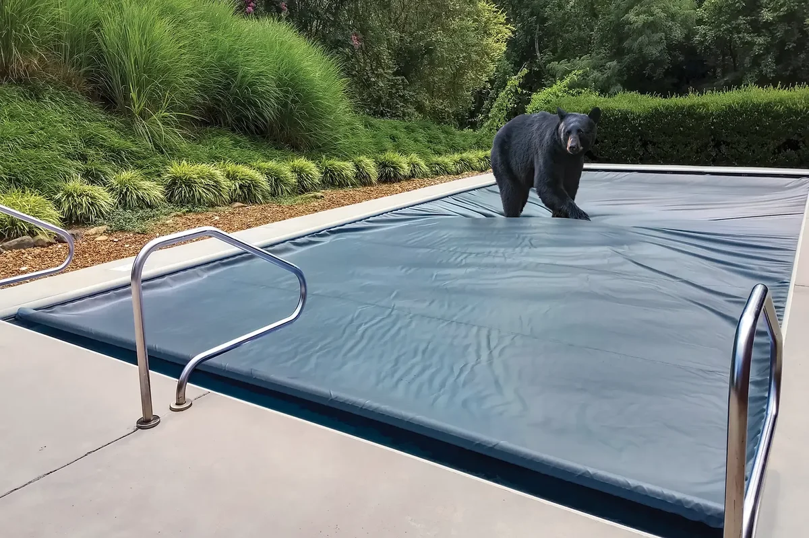
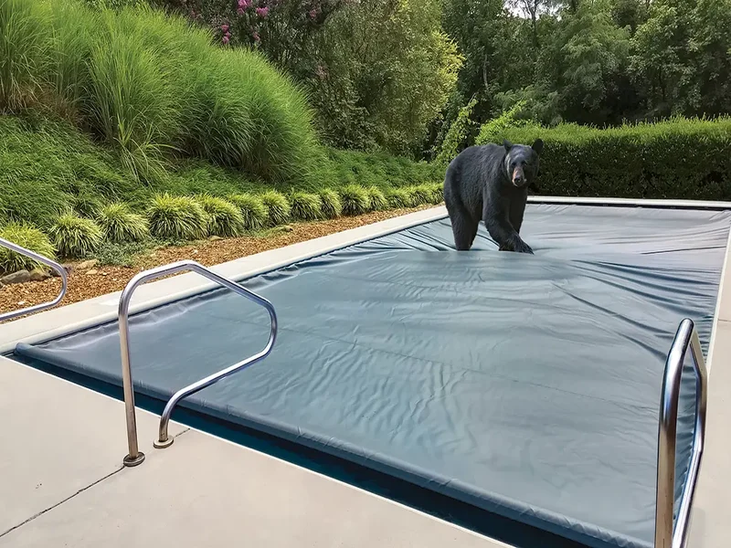
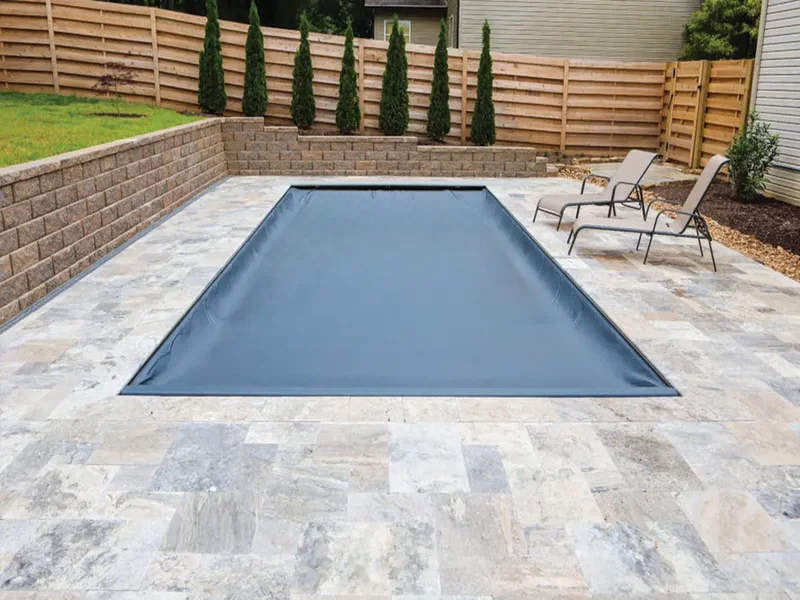

Home / Resources / ASTM F1346 Explained
ASTM F1346: The Pool Safety Cover Standard, Explained in Plain Language
What the standard actually requires, how covers get certified, and what it means for your family's safety.
Avada Builder Instructions — Section 1: Hero
Container: 100% width, Background #003366 solid, Padding 70px top/bottom
Column: Single column, 8/12 width, centered
Elements: 3 Text Blocks — breadcrumbs (Open Sans 13px #AACCEE), H1 (Montserrat 40px 700 #FFF center), subheadline (Open Sans 18px rgba(255,255,255,0.85) center)
What Is ASTM F1346?
ASTM F1346 is the American Society for Testing and Materials standard that defines the minimum safety requirements for pool covers. A cover that meets ASTM F1346 has passed four categories of tests: static load strength (must support at least 485 lbs), perimeter gap limits (no opening wide enough for a child to reach the water), surface drainage (no dangerous water accumulation on top), and permanent labeling (manufacturer, model, and compliance printed on the cover). Covers sold as "safety covers" in the United States must meet this standard.
Avada Builder Instructions — Section 2: Featured Snippet Box
Container: max-width 900px, centered, BG #EBF4FF, border-left 4px solid #003366, border-radius 6px, padding 30px 35px, margin 50px auto 0
Purpose: Designed to win Google's featured snippet. Keep the answer concise and self-contained.
Elements: H2 (Montserrat 22px 700 #003366), body text (Open Sans 16px #25282A, line-height 1.7)

Understanding the Standard Behind Every Safety Cover
ASTM International (formerly the American Society for Testing and Materials) is one of the largest voluntary standards development organizations in the world. Their standards are developed by committees of industry experts, engineers, and consumer advocates through a consensus-based process. F1346 specifically governs "Performance Specifications for Safety Covers and Labeling Requirements for All Covers for Swimming Pools, Spas, and Hot Tubs."
The standard was first published in 1991 and is periodically updated to reflect advances in materials and testing methodology. It applies to all types of pool covers — mesh, solid, and automatic — not just one category. Any cover marketed as a "safety cover" in the United States is expected to meet the requirements defined in ASTM F1346.
Avada Builder Instructions — Section 3: What Is ASTM Expanded
Container: 100% width, white BG, padding 60px top/bottom, inner max-width 1100px centered
Image: safety-hero-bear.webp, full width, border-radius 8px, fade-in animation 0.6s
Text: H2 (Montserrat 32px 700 #003366), 2 paragraphs (Open Sans 16px #333 line-height 1.7)

Test 1: Static Load — 485 Pounds Minimum
The cover must support a concentrated static load of at least 485 pounds (220 kg) without allowing the weight to contact the water surface. This simulates an adult or child falling onto the cover. The load is applied at the weakest point of the cover span — not the edge, but the center, where deflection is greatest. Integra covers exceed this threshold significantly.
Why it matters: A cover that can't hold weight isn't a safety barrier — it's a hazard. The static load test separates safety covers from simple pool blankets.
Avada Builder Instructions — Section 4A: Strength Test
Container: White BG, padding 50px, border-bottom 1px solid #E5E5E5
Layout: 2 columns (5/12 image, 7/12 text), 30px gap
Image: astm-strength-test.webp, fade-in-left animation 0.5s, delay 0.1s
Callout: Background #F0F7FF, border-left 3px solid #003366, padding 15px 20px
Test 2: Perimeter Gap — No Child-Sized Opening
The standard requires that no gap between the cover edge and the pool coping (or deck) exceeds a specified width — generally, no opening large enough for a small child to slip through and access the water. This is tested along the entire perimeter, including corners. Integra's track-guided system creates a continuous seal with no gaps — the cover runs inside aluminum tracks bolted to the coping, eliminating the perimeter gap issue entirely.
Why it matters: Most pool drownings involving covers happen at the edges — where a child can slip between the cover and the deck. The perimeter test exists specifically to prevent this.

Avada Builder Instructions — Section 4B: Perimeter Gap Test
Container: Light gray BG #F5F5F5, padding 50px
Layout: 2 columns (7/12 text, 5/12 image), 30px gap — image on RIGHT
Image: perimeter-gap-test.webp, fade-in-right animation 0.5s, delay 0.1s

Test 3: Surface Drainage — No Dangerous Ponding
The standard requires that rainwater or sprinkler water drains off the cover surface and does not accumulate in pools deep enough to pose a drowning hazard. This is especially important for solid covers. Integra covers are designed with slight surface tension and drainage pathways. Additionally, a cover pump is recommended for extended closure periods. Standing water on any pool cover — even a safety cover — is a risk that proper drainage design and maintenance eliminates.
Why it matters: Even a few inches of standing water on a cover surface can be dangerous for a small child. The drainage test ensures the cover doesn't create a new hazard while solving the original one.
Avada Builder Instructions — Section 4C: Surface Drainage Test
Container: White BG, padding 50px, border-bottom 1px solid #E5E5E5
Layout: 2 columns (5/12 image, 7/12 text), 30px gap — image on LEFT
Image: surface-drainage-test.webp, fade-in-left animation 0.5s, delay 0.1s
Test 4: Permanent Labeling — Verifiable Compliance
Every cover that claims ASTM F1346 compliance must carry a permanent, non-removable label that includes: the manufacturer's name, the model or part number, the year of manufacture, and a statement that the cover meets ASTM F1346. This label must survive the life of the cover — it can't be a sticker that peels off after one season. Integra covers include this label heat-sealed to the underside of the fabric, visible during any inspection.
Why it matters: If there's no label, there's no proof of compliance. A label lets homeowners, inspectors, and insurance companies verify that the cover actually meets the standard — not just the marketing.

Avada Builder Instructions — Section 4D: Labeling Requirements
Container: Light gray BG #F5F5F5, padding 50px
Layout: 2 columns (7/12 text, 5/12 image), 30px gap — image on RIGHT
Image: astm-label.webp, fade-in-right animation 0.5s, delay 0.1s
What ASTM F1346 Does Not Mean
- It does not mean the cover replaces a pool fence. Most jurisdictions require a barrier (fence) regardless of cover type. ASTM F1346 is an additional layer of protection.
- It does not mean the cover is childproof. No cover is childproof. The standard establishes minimum resistance levels, but supervision remains the primary safety measure.
- It does not guarantee insurance discounts. Some insurers offer discounts for ASTM-compliant covers, but this varies. Check with your carrier.
- It does not apply to solar blankets or bubble covers. Those are not safety covers and cannot be sold as such. ASTM F1346 applies only to covers designed to bear weight and restrict access.
- It does not require third-party testing. The standard describes the tests; manufacturers self-certify or hire independent labs voluntarily. There is no mandatory government certification body.
Avada Builder Instructions — Section 5: What It Doesn't Mean
Container: White BG, padding 50px, inner max-width 800px centered
Elements: H2 (Montserrat 30px 700 #003366), bulleted list (Open Sans 16px #333 line-height 1.8, disc style, padding-left 20px)
How to Verify a Cover Meets ASTM F1346
- Check the label. Look for a permanent label on the underside of the cover that references ASTM F1346 by name.
- Verify the manufacturer. Confirm the manufacturer listed on the label is a real company with a track record. Search their name + "ASTM F1346."
- Ask for test documentation. Reputable manufacturers can provide test reports or certificates of compliance on request.
- Look for independent lab testing. While not required, third-party lab verification (such as through Intertek or UL) is a strong indicator of genuine compliance.
- Be skeptical of vague claims. Phrases like "meets safety standards" or "safety rated" without specifically naming ASTM F1346 are red flags.
Avada Builder Instructions — Section 6: How to Verify
Container: Light gray BG #F5F5F5, padding 50px, inner max-width 800px centered
Elements: H2 (Montserrat 30px 700 #003366), ordered list (Open Sans 16px #333 line-height 1.8)
How Integra Meets — and Exceeds — ASTM F1346
Every Integra automatic pool cover is designed, manufactured, and tested to meet ASTM F1346. The stainless steel mechanism, Aegis-grade fabric, and track-guided design work together to exceed the standard's minimum requirements across all four test categories.
Integra covers carry a permanent compliance label, and our manufacturing facility maintains documentation for every unit produced. If you ever need to verify your cover's compliance — for an inspection, an insurance claim, or your own peace of mind — we can provide that documentation.
485+ lbs
Static load capacity
0"
Perimeter gap (track-guided)
20 years
Mechanism warranty
Avada Builder Instructions — Section 7: Integra & ASTM
Container: White BG, padding 50px, inner max-width 800px centered
Stat Cards: 3 equal columns, 20px gap. Each: BG #F0F7FF, border-radius 8px, padding 25px, text-align center
Animation: fade-in, staggered 0.1s delay per card
Have Questions About Pool Cover Safety?
Talk to an Integra specialist about ASTM F1346 compliance, cover options, and installation.
Contact UsAvada Builder Instructions — Section 8: CTA
Container: BG #003366, padding 60px, inner max-width 700px centered, text-align center
Button: BG #FFFFFF, color #003366, Montserrat 15px 600, padding 14px 40px, border-radius 4px, hover BG #E6EEF5
Link: /contact/